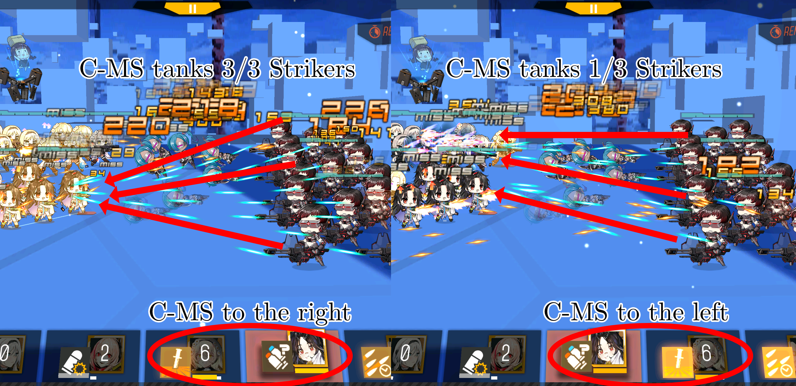
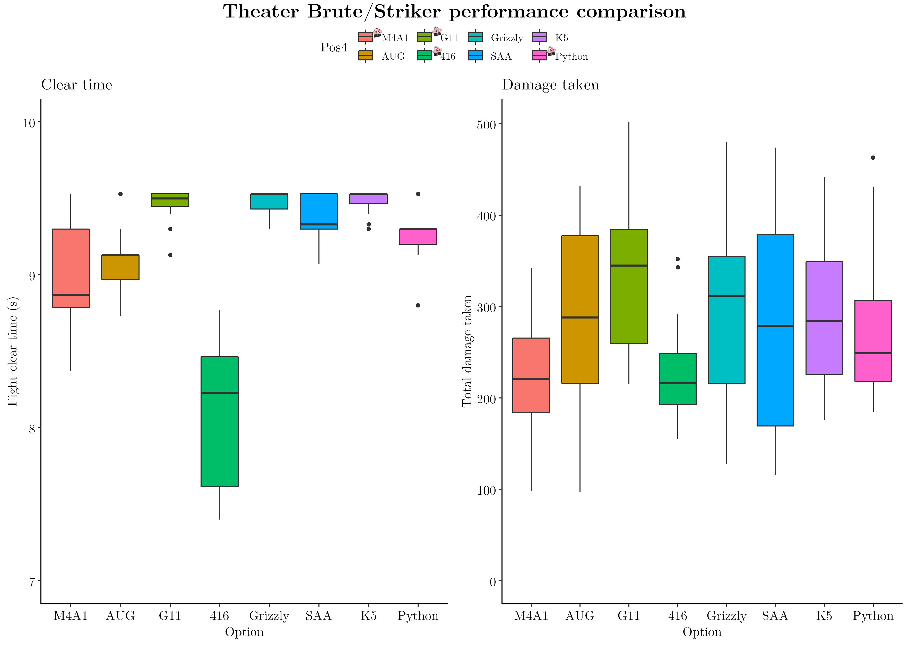
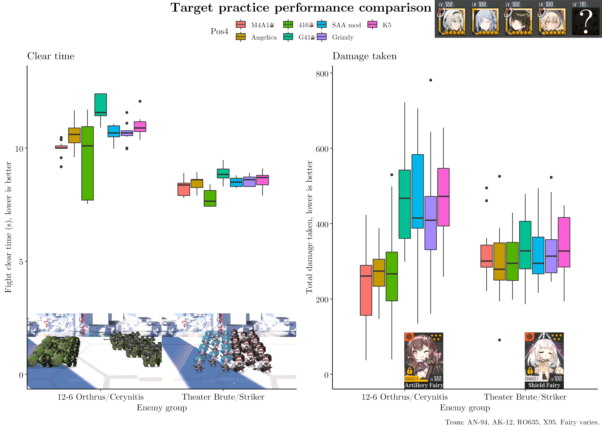
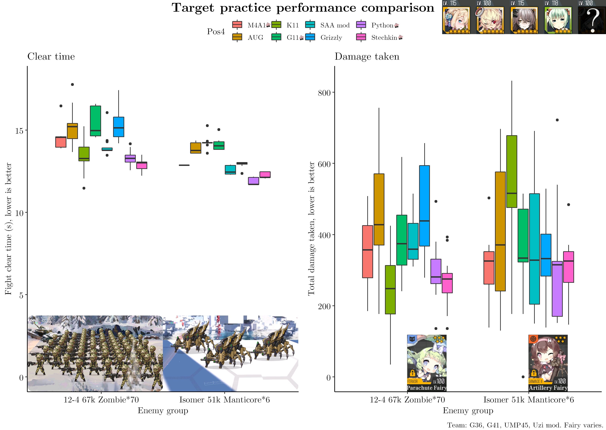
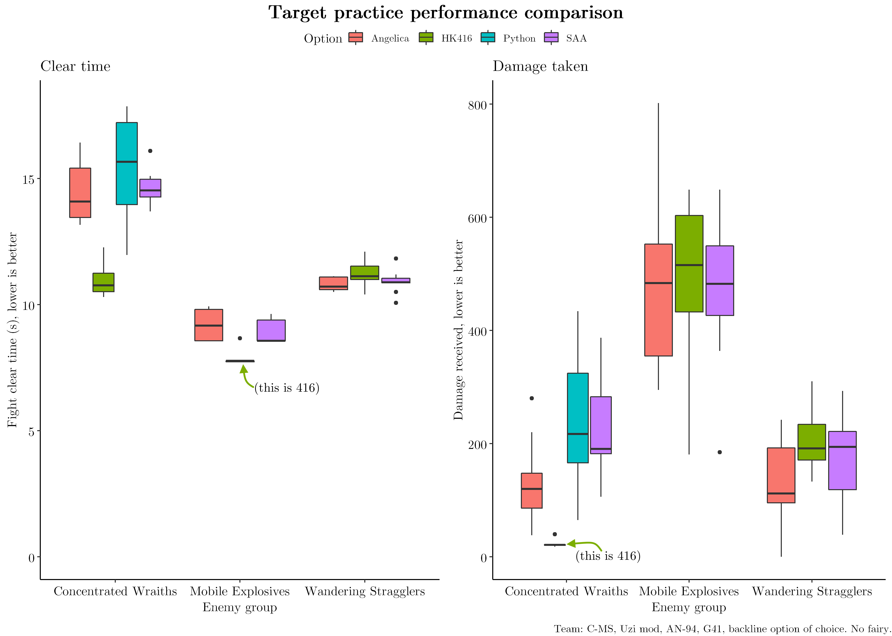
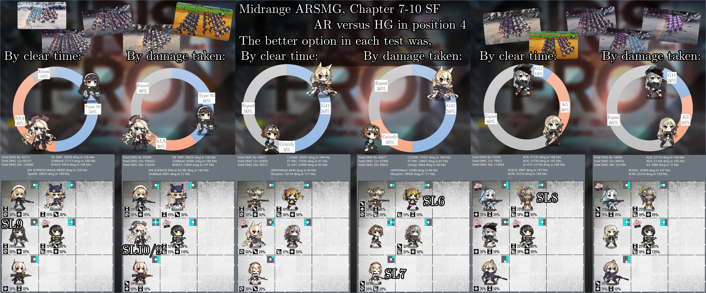

This is a collection of ARSMG tests, comparing a range of position 4 options. It varies by the situation, but overall FP-buffing handguns did not seem to perform better than various reasonable AR choices, even if those ARs didn't have AR-buffing tiles.
Note: whenever possible, skill bar order was adjusted so the maintank SMG would be prioritized over the offtank.

First, everyone's favorite Brute/Striker combo straight from Theater Core 8.

Echelon: AN-94, Sopmod, C-MS, X95, and some variable position 4 doll. 416's nade is clearly very strong here. Sopmod's grenade set a ceiling on clear times across the board, with no battles lasting past its impact. M4A1/416/Python seemed to do best, while AUG/G11/Grizzly/K5/SAA were all a bit worse. Clear time is not zero-scaled here to help distinguish each doll's performance.

Versus the Orthrus, G41 wasn't great. Otherwise, all ARs performed far better for reducing damage taken. The handguns tested looked equal-or-worse to the ARs against the Brute/Striker comp.

FP tiles on Uzi and more grenades were clearly a big deal against the zombie horde here. K11/Python/Stechkin minimized damage best. Other handguns did not have a clear advantage over G11. The Manticores here have 64 armor, so FP buffing handguns did significantly better for both clear time and damage. M4A1 also performed well, and the damage taken with G11 was not too far behind. Six enemy links in total was clearly not enough for K11, as she was by far the worst option here.

While Python was only tested in one case, neither she nor SAA had a clear advantage in any of these tests.
The next graphic is based on clear time/damage taken results for three echelons, two configurations per echelon, and ten enemy groups. That'd be a few too many box-and-whisker plots to reasonably present and discuss, so here are the overall statistics from it:

Despite the numerical advantage for each 2AR1HG echelons, they did not have a clear performance advantage overall.
Note: test conditions did not kite and each battle started with all units at full HP. This will increase the relative damage contribution of the SMGs, which may favor handguns slightly more.